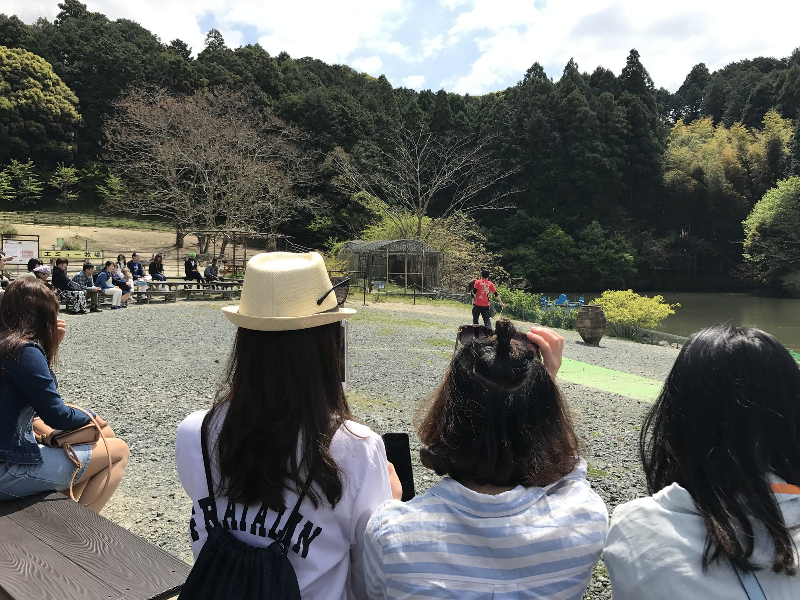
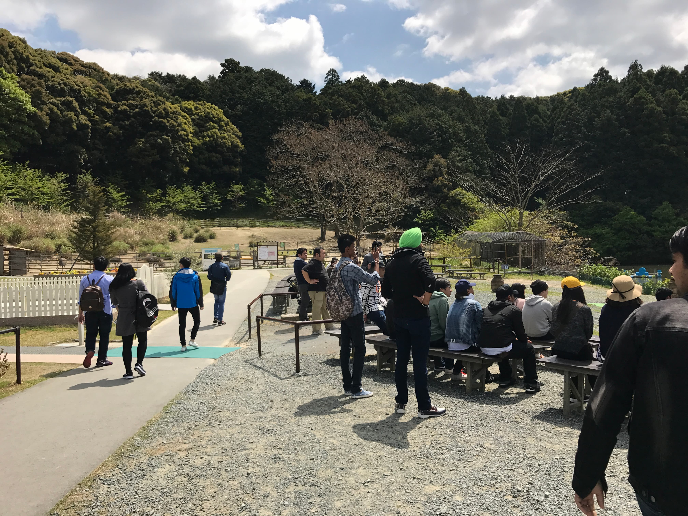
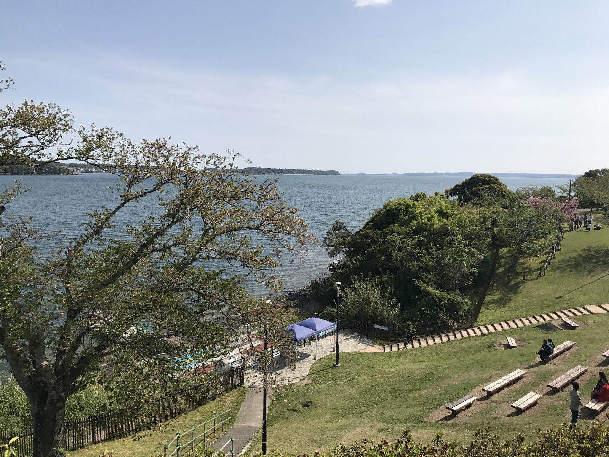

More Than Just a School Trip
By the time this trip was organised, Nagoya had already become part of my daily life. I attended classes, studied Japanese, worked part-time, and followed the same routine every week. When our school announced a sightseeing excursion beyond Nagoya, I was excited, but I never imagined it would become one of my favourite memories in Japan.
This was the very first sightseeing trip organised by our school, and it gave me something much more valuable than simply visiting new places. It gave me the opportunity to spend an entire day with my classmates outside the classroom. For the first time, I truly got to know students not only from Nepal but also from many other countries. We travelled together, shared stories, laughed, took photographs, and discovered new places side by side. Although we came from different cultures and backgrounds, travelling together made us feel like one family. By the end of the day, I realised this excursion was much more than a school activity—it was the beginning of friendships that made my life in Japan richer and more meaningful.
Discovering Kakegawa Kachoen
When we arrived at Kakegawa Kachoen, I was immediately amazed by the peaceful atmosphere. It was unlike any garden I had ever visited before. The gardens were filled with colourful flowers, beautiful walking paths, and birds flying freely around us. Everything felt peaceful and carefully designed. Walking through the gardens made me appreciate how beautifully nature and human creativity could exist together.

The Eagle Demonstration
One of the most exciting moments of our visit to Kakegawa Kachoen was the eagle demonstration. Watching those magnificent birds of prey fly only a few metres above our heads was both thrilling and unforgettable. Their speed, precision, and grace amazed everyone around us. The trainers demonstrated the incredible trust and connection they had built with the birds. Seeing such powerful animals respond so naturally to their trainers made me appreciate wildlife in a completely different way. For a few moments, everyone forgot about taking photographs—we simply stood there watching in amazement.

The First Time I Saw the Sea
After leaving Kakegawa Kachoen, we travelled to Mikkabi Hosaki Park. Standing on the hill overlooking the coastline, I saw the sea for the very first time. Standing there, I forgot everything around me. I simply watched the endless blue water stretching toward the horizon. Growing up in Pokhara, surrounded by mountains and lakes, I had never imagined that one day I would stand beside the sea in Japan. The cool ocean breeze, the sound of the waves, and the peaceful view stayed with me long after that day had ended.

A Journey That Changed My Perspective
When we returned to Nagoya that evening, I realised something had changed. Nagoya was no longer the only place I knew in Japan. It had become a country full of beautiful places, unforgettable experiences, and lifelong friendships waiting to be discovered. That single school excursion inspired my love for travelling and became the beginning of many adventures that followed during my years in Japan.
"Sometimes the greatest journeys begin as ordinary school trips and become extraordinary memories."
Travel Notes
- 📍 Kakegawa Kachoen, Shizuoka
- 📍 Mikkabi Hosaki Park, Hamamatsu
- 🚄 First school excursion beyond Nagoya
- 🦅 Eagle demonstration
- 🍱 First traditional Japanese lunch
- 🌊 First time seeing the sea
- 🤝 Building friendships with classmates from around the world